來自 Apple 健康的跑步和騎車
任何 App 記錄的有氧運動都會顯示路線地圖、配速和心率區間。
適用於 iPhone 與 Apple Watch 的重量訓練
幾秒記下每一組，看清每一項紀錄，讓 AI 教練幫你排好一週。Replex 讓訓練變成看得見的進步。
免費開始。Pro 加入 AI 教練、自訂計畫和完整歷史。
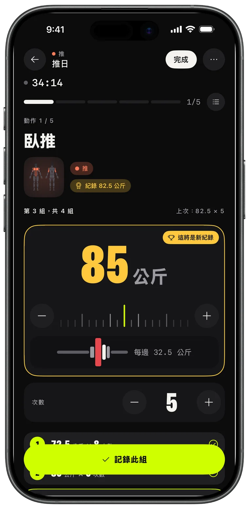
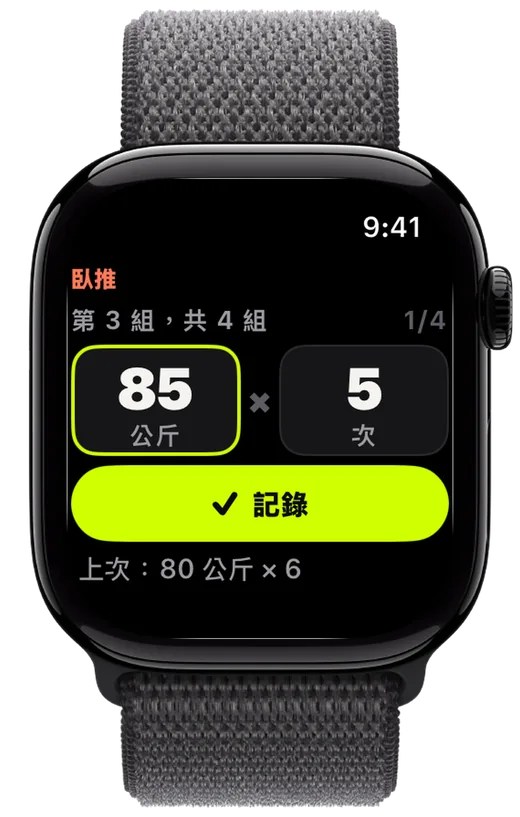
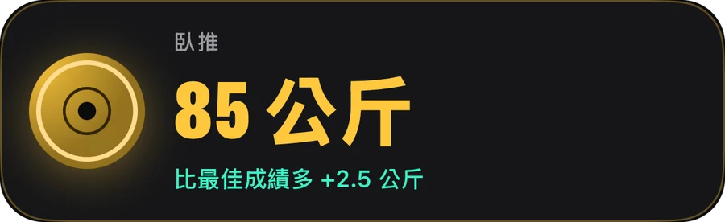
記錄
調好槓片、記下這組、超越上次。Replex 記得你舉過的重量，在你準備好之前就備妥下一組。
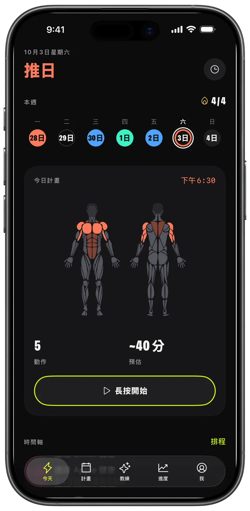
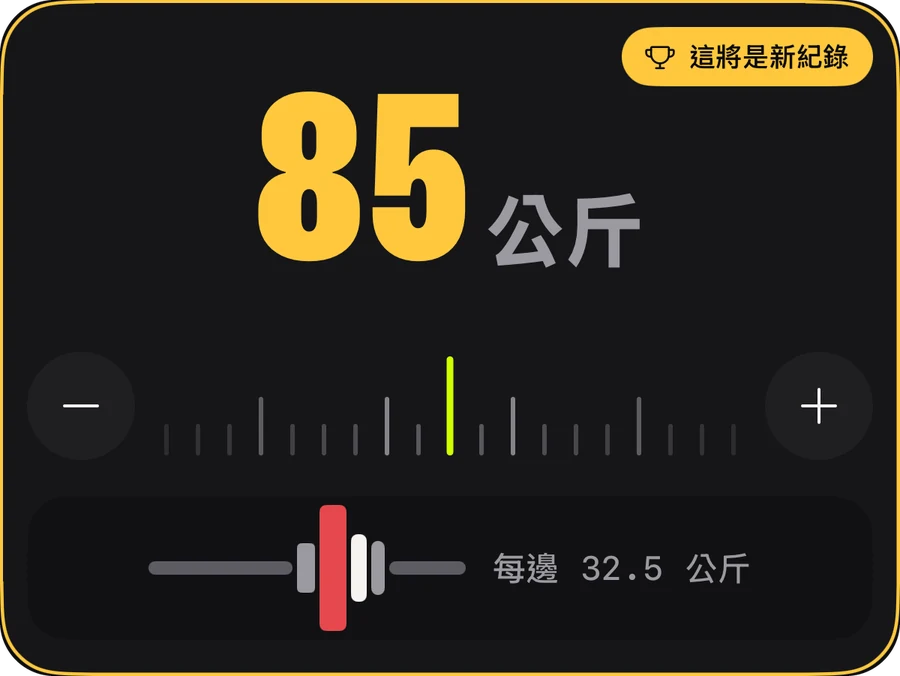
Apple Watch
手機留在包包裡就好。轉動數位錶冠設定重量和次數，點一下「記錄」，iPhone 即時同步。
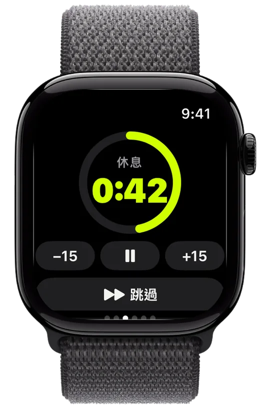
進度
訓練量逐週攀升，每一項紀錄都有跡可循，每個動作的趨勢一目了然——讓你知道付出正在見效。
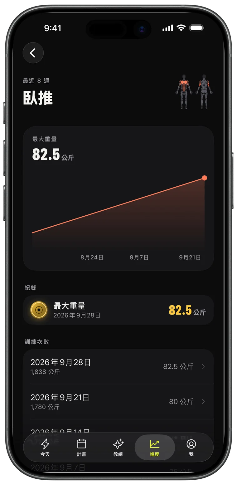
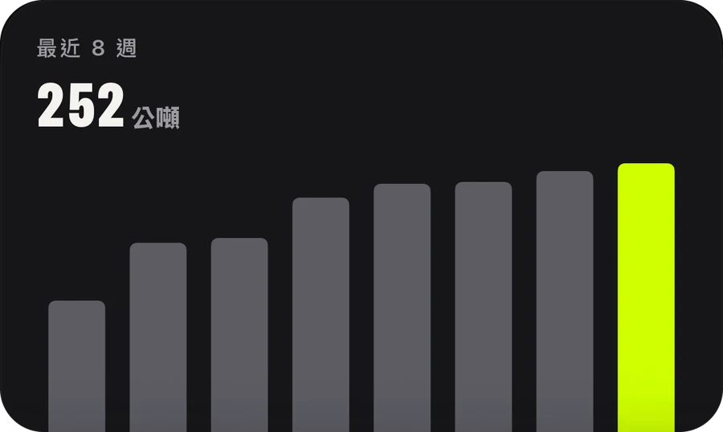
AI 教練 · Pro
提出一週安排，直接排進行事曆。教練會讀取你真實的訓練——訓練、紀錄、跑步——並據此安排。
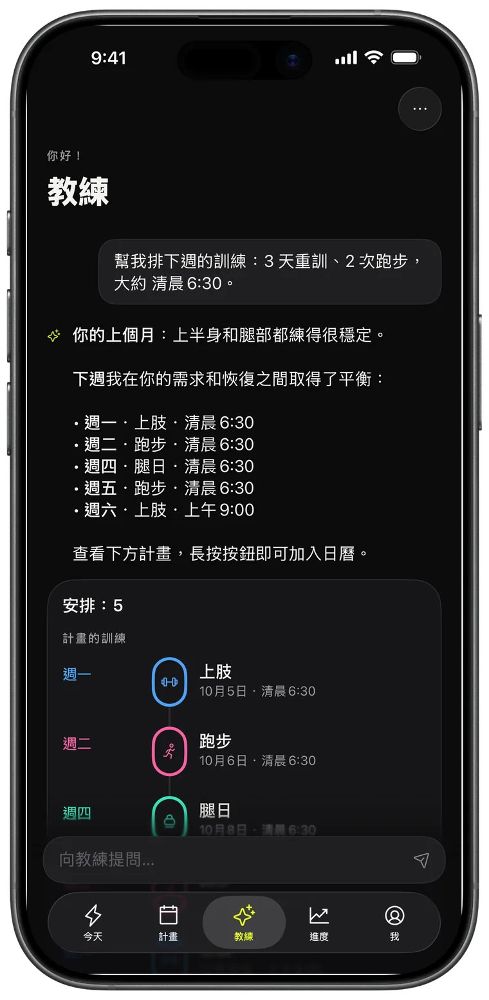
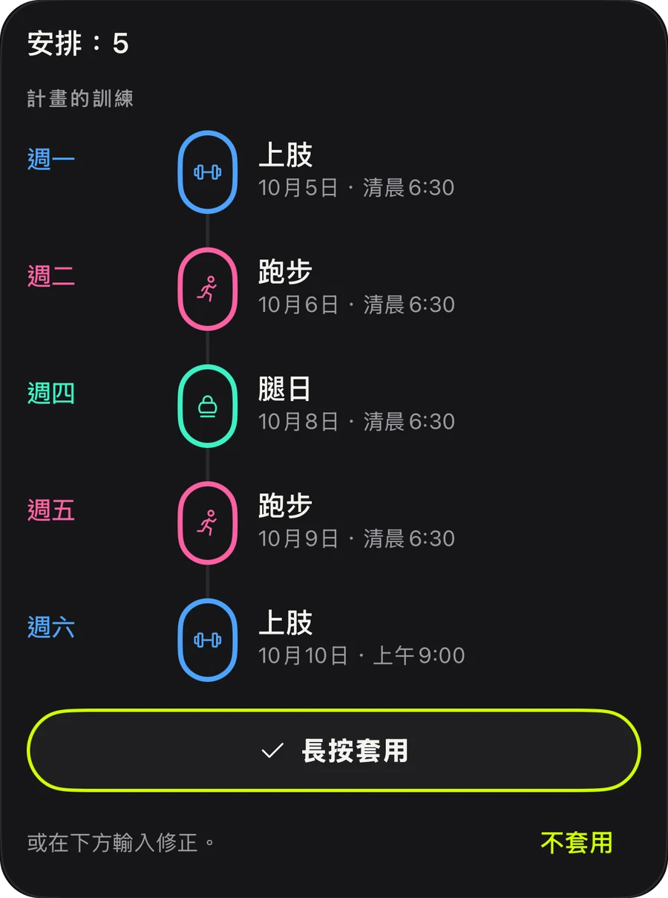
計畫
推、拉、腿、上下半身分化、全身：44 個現成計畫今天就能開始，也可以自己打造並重複使用。
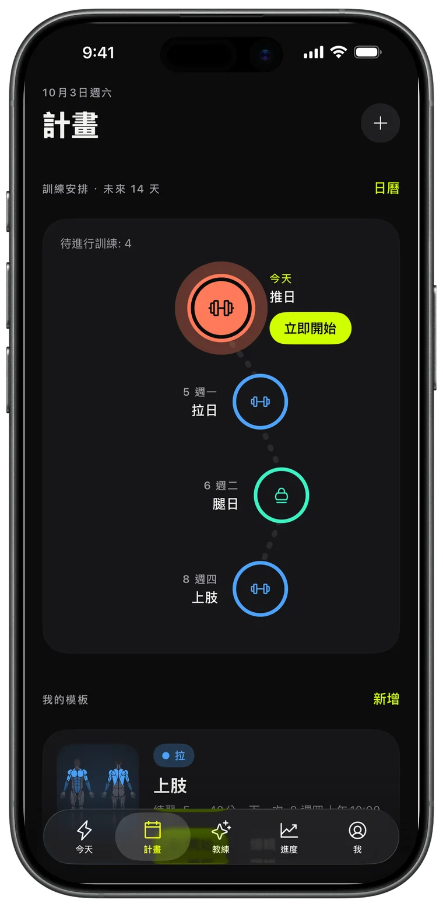
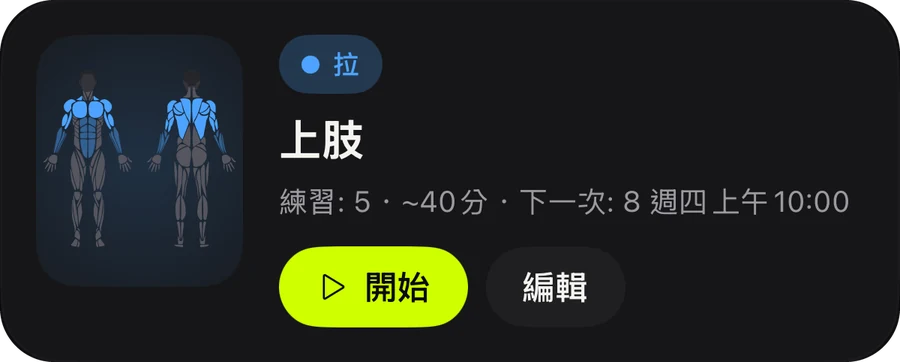
分享
每次完成的訓練都會變成一張限時動態卡片，呈現訓練量、時間和紀錄。發出去，或留作證明。
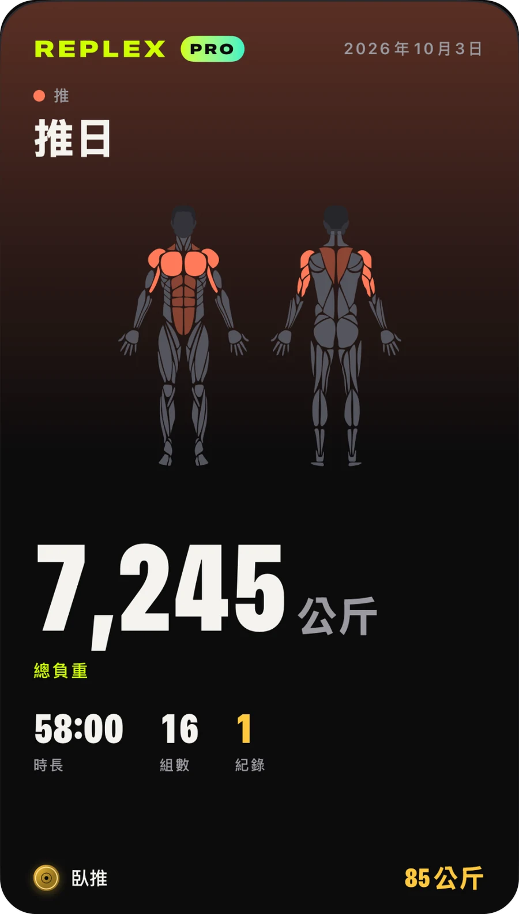
任何 App 記錄的有氧運動都會顯示路線地圖、配速和心率區間。
在鎖定畫面和動態島上查看目前這組、休息和心率。
訓練、範本和計畫在你所有裝置上同步，只有你看得到。
開始前看清這次訓練練哪裡，也看清本週已經練過哪些部位。
公斤、磅或英石；內建自體重量動作和計時動作。
淺色或深色，三種強調色：Volt、藍色和粉紅色，並搭配相應的 App 圖像。
記錄與進步所需的一切。
為提前規劃的訓練者打造。
Pro 可在 App 內按月或按年訂閱，也可一次購買永久使用。訂閱可隨時在你的 Apple 帳號中取消。
下載 Replex，一分鐘內記錄你的第一次訓練。
不用。Replex 在 iPhone 上就能完整使用。有 Apple Watch 的話，你可以在手腕上記錄每組、使用休息計時器並追蹤心率。
是的。記錄、休息計時器、5 個自體重量計畫、近期訓練的紀錄以及 5 次 Apple Watch 訓練都可以免費使用。Replex Pro（按月、按年或一次購買永久使用）加入 AI 教練、全部 44 個計畫、自訂範本和排程、完整歷史以及無限次 Watch 訓練。
存放在你的裝置和你私人的 iCloud 中。訓練也可以儲存到 Apple 健康。AI 教練只會在你提問時，查看回答所需的資訊。
公斤、磅或英石都可以，槓片計算器也會跟著你的單位。
支援 54 種語言，包括中文、英文、西班牙文、葡萄牙文、法文、德文、日文、韓文、阿拉伯文和希伯來文。